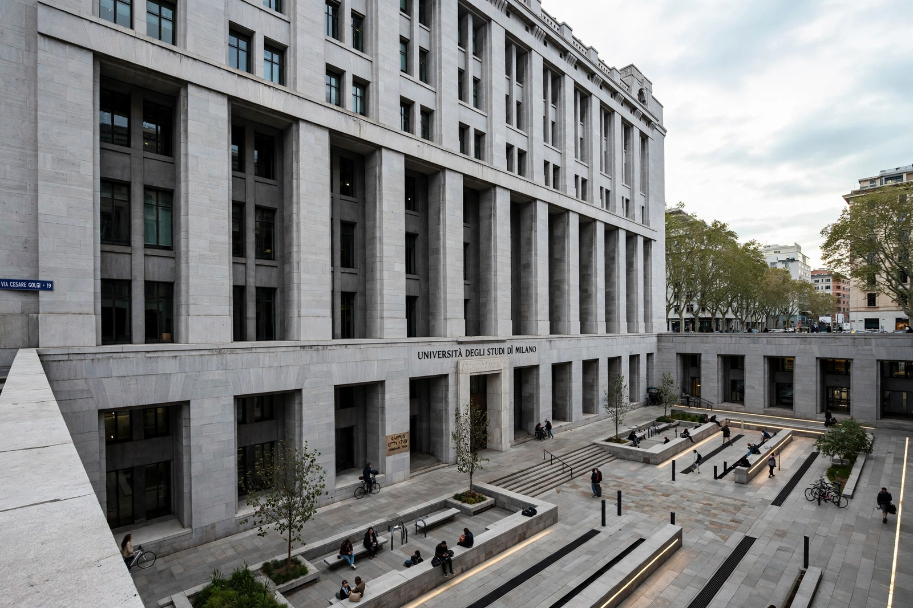

Shelley McNamara
Shelley McNamara (born 1952) is an Irish architect, co-founder with Yvonne Farrell of Grafton Architects in Dublin. With Farrell she received the Pritzker Architecture Prize in 2020 — the first Irish laureates — and the RIBA Royal Gold Medal the same year. The Pritzker jury praised their "unrelenting" attention to building, place, and the people who would inhabit their work.

| Born | 1952, Lisdoonvarna, County Clare, Ireland |
|---|---|
| Nationality | Irish |
| Occupation | Architect |
| Practice | Grafton Architects |
| Awards | Pritzker Architecture Prize (2020); RIBA Royal Gold Medal (2020) |
| Notable works | Bocconi University, UTEC Lima, Town House Kingston |
Career
McNamara graduated from University College Dublin in 1974 and co-founded Grafton Architects in 1978 with Yvonne Farrell and others. She has taught at UCD since 1976 and has held visiting professorships at institutions including the Accademia di Architettura in Mendrisio, EPFL Lausanne, and Harvard and Yale.
Grafton's buildings are characterised by sculptural mass, deep reveals, and an interest in carving public space out of solid form. Landmark works include the Bocconi University faculty building in Milan (World Building of the Year 2008), the UTEC campus in Lima (RIBA International Prize 2016), the Town House at Kingston University London (RIBA Stirling Prize 2021), and the Marshall Building at the LSE. With Farrell she curated the 2018 Venice Biennale around the theme "Freespace", arguing for architecture's generosity.
See also
References
- The Pritzker Architecture Prize — Yvonne Farrell and Shelley McNamara, 2020 laureates.
- RIBA, "Royal Gold Medal 2020: Grafton Architects".